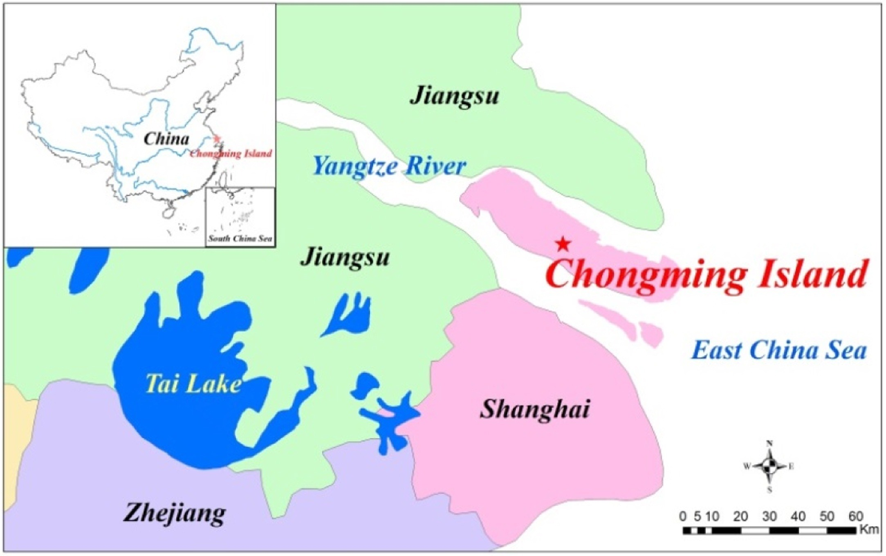

4 Policy
4.1 Summary
4.1.1 Sustainability challenge in Shanghai
As the main place of economic and production activities, cities are responsible for the most part of carbon emission. Shanghai is one of the biggest cities in China, gathering dense population and growing its economic rapidly, which makes a high energy demand. Though the energy intensity has already declined by the optimizition of industry structure, the CO2 emission is still higher than some other provinces (Gao and Pan, 2022). There are two ways of carbon neutrality: one is to reduce the source emission, another is to capture and absorb the CO2. Carbon sink is the term that describes CO2 absorption. Generally, there are green and blue carbon sink, which refer to forest and sea. The CO2 could be absorbed by the plants in the photosynthesis process, and therefore it reduce carbon in the air.
Chongming district is the world largest alluvial island, and it occupies around 20% area of Shanghai (1411/6340 km2). The forest area and theirs ability of carbon sink is supposed to balance the carbon emission within the island, however, though policy has restricted the construction development, local implementation didn’t fully comply with the policy. The construction land, which converted from cropland, achieved 20% in 2013 while the restriction was 13% in 2020 (Guo et al., 2017). This expansion highly impact the carbon cycle balance.

In effect, relevant policies have been released in terms of emission reduction, but challenges still exist in the practical level. The balance between abatement and economic development is generally not easy, as the performance of local government is currently measured by local economy. Therefore, it’s necessary to establish new criteria of assessment align with the ecodevelopment.
4.1.2 Relevant policies
In the international level, the Paris Agreement was established by the UN Framework Convention on Climate Change in 2016. This conference asked participating countries to update their Nationally Determined Contributions (NDCs) every few years. This NDC is the environmental protection object againsts global warming in the national level. China’s latest version of NDC had been updated in 2021, and the key points are:
lower CO2 emission per GDP by over 65% from 2005 level.
increase the share of non-fossil fuels in primary energy consumption to around 25%,
increase the forest stock volume by 6 billion m3 from the 2005 level,
bring its total installed capacity of wind and solar power to over 1.2 billion kW.
In terms of the domestic policy, Hepburn et al. (2021) summarized the specific measure that China would implement during the 14th Five-year period (2021-2025) for achieving carbon neutrality goal by 2060. There is a “1 + N” policy system. The “1” refers to two documents (The Guideline and the Action Plan), which are general policies. The “N” refers to supportive and implementation plan in specific fields and industries (i.e.).
In local level, Shanghai government has released local Implementation Plan in 2022, which aligns with the national level policy requirement. Specific local industries were considered in the local policy.
4.2 Application
In terms of promoting sustainable development in Shanghai, remote sensing could be useful in detecting two aspects: emission detection and carbon sink.
- Emissions detection
To spatialized the carbon emission, night time light (NTL) remote sensing data could be used to located the place with potentially high pollution. It’s needed to combine the map with other economic and energy consumption data, which helps to understand the hidden reason of emission (Gao et al., 2023). In this case, the remote sensing data is one of the indicators used to measure the carbon emission.
Some satellites are typically used for CO2 detection (GOSAT, OCO-2, and TanSat). However, the current satellites have limit resolution to locate the exact emission source (Wu et al., 2023).
- Carbon sink measurement
As called green carbon sink, the structure of forest, i.e. species of trees, age of trees, is highly related to its ability of capturing carbon (Zhang et al., 2022). Using remote sensing could obtain the information of carbon sink quicker and more accurate than conventional filed team survey.
4.3 Reflection
The application of remote sensing is basically monitoring the carbon emission source and carbon sink area. It can help to identify the area with high carbon emission, and the carbon storage potential in certain area, such as wetland, forest. Technically, the remote sensing could not actually reduce the carbon emission, but it could play a role as a verification tool which provides the evidence that the carbon emission is reduced. In practice, the information from bottom-up should be combined with the observation data from remotely sensing, which is top-down, could help policy maker to verify the result of work.
The advantage of using observation data from remote sensing satellite is its efficiency. Satellites have wide vision that could cover thousands square kilometers area while having less than 1 meter resolution, and the installation of local sensor would be not necessary.